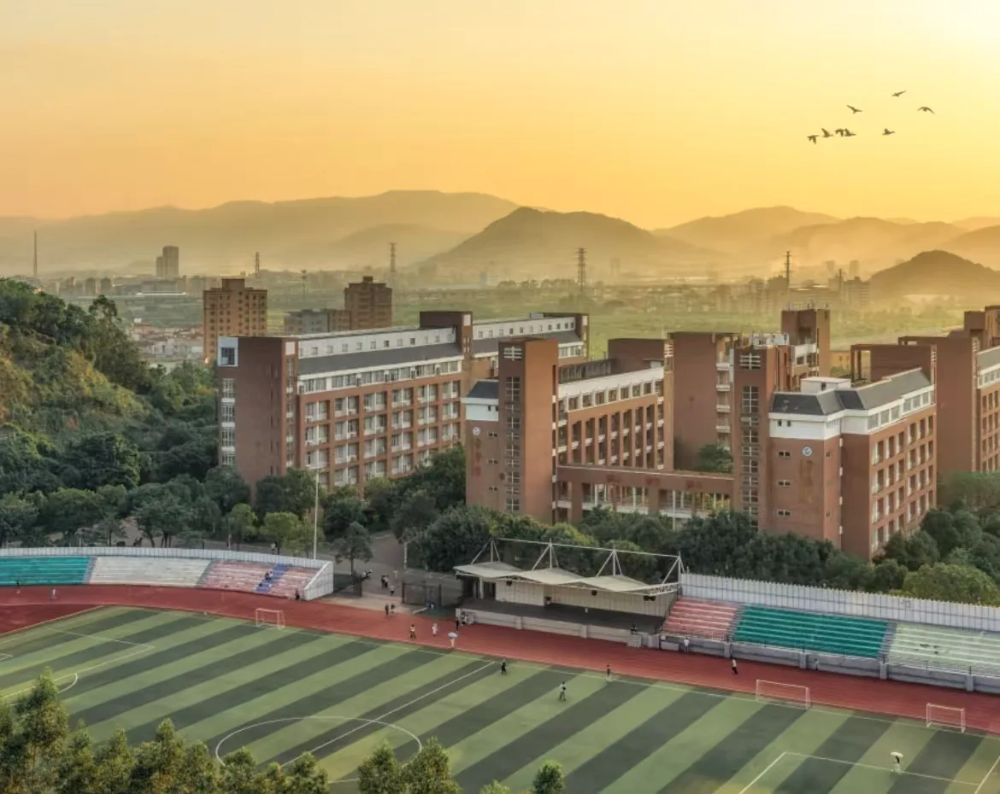

BUILDING · 校园建筑
校园建筑
教学楼、图书馆与现代校园空间相互呼应，构成学子求知、探索、成长的福地。
钟楼的指针走得比人快，走廊的光却总在午后慢下来——建筑替这所学校， 留下了秩序，也留下了时间。
查看详情 →校园之福，藏在晨读的走廊、傍晚的湖边，也藏在一节不期而遇的课上。 在长乐的这片校园里，图书馆的灯、操场的风、宿舍楼下的笑闹， 共同把“融会中外，经世致用”八个字，过成了每天都要经过的日常。
福州外语外贸学院坐落于福州长乐。学校秉承举办者吴钦明先生 “教育是一种大爱”的情怀，倡导 “善心、善言、善行”的教育理念， 并由此砥砺出“融会中外，经世致用”的校训精神， 孕育了“崇德、勤学、求实、创新”的优良校风。
山给了它厚度，海给了它开阔。于是这所校园里的“福”， 不是守着门楣的祝愿，而是一种向外的姿态：把外语学成桥梁， 把专业学成本事，把善意学成习惯。
学校现有长乐、滨海和罗源（在建）三个校区，占地 2633.96 亩，校园建筑总面积 65.46 万平方米；教学仪器设备总值 1.95 亿元， 纸质图书 235.24 万册。设有 12 个二级教学单位、 43 个本科专业， 全日制本科在校生 2.2 万余人， 学科覆盖经、教、文、理、工、管、艺七个门类。
数字是冷的，但它描述的场景是热的：清晨六点半亮起的第一盏阅览灯， 午后实训室里连成片的键盘声，夜里操场跑道上一圈一圈的脚步声—— 这些才是“占地多少亩”真正的注脚。
学校建有各类教学实验室 172 个、 校外实践教学基地 340 个， 并设有 8600 平方米的校内大学生创新创业园区。 强调专业教学与外语教育深度融合、专业素质与创业素养兼修并蓄， 开设“国际化视野精英班”与创新型人才培养实验班。
于是“福”在这里多了一层意思：不是被祝福，而是有能力去祝福别人。 会一门语言、会一项技术、会一次把想法落地的完整流程， 毕业后走到哪里，都带着这份底气。
本页校情数据与办学表述，参考学校官网《学校简介》栏目公开内容 （长乐、滨海、罗源三校区，占地 2633.96 亩，12 个二级教学单位， 43 个本科专业，全日制本科在校生 2.2 万余人等）。 如需了解最新、最完整的办学信息，请以下方官网链接为准。
前往官网 www.fzfu.com →